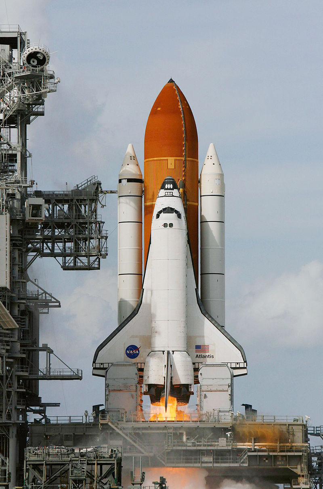

Space Shuttle Atlantis (Orbiter Vehicle Designation: OV‑104)
is a Space Shuttle orbiter vehicle belonging to the National
Aeronautics and Space Administration (NASA), the spaceflight
and space exploration agency of the United States.
Constructed by the Rockwell International company in Southern
California and delivered to the Kennedy Space Center in Eastern
Florida in April 1985, Atlantis is the fourth operational and
the second-to-last Space Shuttle built. Its maiden flight
was STS-51-J from 3 to 7 October 1985.
By the end of its final mission, Atlantis had orbited the Earth a
total of 4,848 times, traveling nearly 126,000,000 mi (203,000,000 km)
or more than 525 times the distance from the Earth to the Moon.
Atlantis is named after RV Atlantis, a two-masted sailing ship
that operated as the primary research vessel for the Woods Hole
Oceanographic Institution from 1930 to 1966.